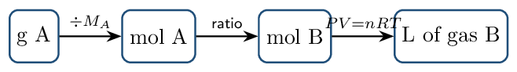

Most of this chapter you have already met: §5.2–5.3, 5.5, 5.6, and 5.8 are CED topics 3.4–3.6, taught in Unit 3. Read those sections as deeper practice, not new material.
Two things here are genuinely new. §5.4 gas stoichiometry closes the loop between Chapter 3's mole ratios and gas volumes — it is the reason to work this chapter. And collecting a gas over water (§5.5) is a standard laboratory technique that appears on the AP exam and is covered nowhere else.
§5.7 (Graham's law of effusion) is marked ENRICHMENT — it is not on the current CED. §5.10 (atmospheric chemistry) is skipped entirely.
Pressure and the Empirical Gas Laws Zumdahl §5.1–5.2
- Explain what gas pressure is and convert among its units.
- State Boyle's, Charles's, and Avogadro's laws and use each.
Read: Zumdahl §5.1–5.2 • PDF pp. 227–235
- Convert 25 °C to kelvin: 298 K
- Moles in 32.0 g \(\ce{O2}\): 1.00 mol
- KMT: average kinetic energy depends only on: temperature
INSTRUCTION A • What pressure is, and how we measure it 25 min
Pressure ZUM §5.1
SP 1Pressure is force per unit area. For a gas it arises from countless particle collisions with the container walls — each collision is tiny, but there are on the order of \(10^{23}\) particles.
Atmospheric pressure is literally the weight of the air above you, which is why it falls with altitude.
Torricelli's barometer
Invented in 1643: a tube of mercury inverted in a dish. Atmospheric pressure pushing down on the dish holds the column up. At sea level the column averages 760 mm of mercury.
The famous crushed-can demonstration is the same physics. Boiling water fills a can with steam; capping and cooling condenses that steam to a few drops of liquid, leaving almost nothing inside to push outward. Atmospheric pressure — which was always there — then crushes the can. Nothing “sucked” it; the inside simply stopped pushing back.
Units you must be able to convert
GUIDED PRACTICE • Pressure conversions 15 min
- 2.50 atm in torr: 1900 torr
- 380 mmHg in atm: 0.500 atm
- 202.65 kPa in atm: 2.000 atm
INSTRUCTION B • Three empirical laws 20 min
Boyle, Charles, and Avogadro ZUM §5.2
SP 5Each law fixes two variables and relates the other two:
| Law | Held constant | Relationship | Working form |
|---|---|---|---|
| Boyle | \(n\), \(T\) | \(P\) and \(V\) inversely | \(P_1V_1 = P_2V_2\) |
| Charles | \(n\), \(P\) | \(V\) and \(T\) directly | \(V_1/T_1 = V_2/T_2\) |
| Avogadro | \(P\), \(T\) | \(V\) and \(n\) directly | \(V_1/n_1 = V_2/n_2\) |
Charles's and Avogadro's laws are ratios, so temperature must be in kelvin. Celsius has an arbitrary zero: doubling from 10 °C to 20 °C is not doubling the absolute temperature at all — it is 283 K to 293 K, a 3.5% rise.
A 5.00 L sample at 1.20 atm is compressed to 2.00 L at constant temperature. \[ P_2 = \frac{P_1V_1}{V_2} = \frac{(1.20)(5.00)}{2.00} = 3.00\,\mathrm{atm} \] Sanity check: the volume shrank, so the pressure must rise. It did.
A balloon holds 2.50 L at 27 °C. What is its volume at 127 °C, pressure constant? \[ V_2 = V_1\frac{T_2}{T_1} = 2.50 \times \frac{400.}{300.} = 3.33\,\mathrm{L} \] Using Celsius would have given \(2.50 \times 127/27 = 11.8\,\mathrm{L}\) — more than three times too large. This is why the conversion matters.
APPLICATION • Combining the laws 20 min
Any two states of a fixed gas sample are related by the combined gas law:- A gas occupies 4.00 L at 2.00 atm and
300. K. Find its volume at 1.00 atm and
450. K.
\(V_2 = 4.00 \times \tfrac{2.00}{1.00} \times \tfrac{450.}{300.} = 12.0\,\mathrm{L}\)
- Explain, using particle collisions, why halving the volume at constant temperature doubles the pressure.
A rigid steel cylinder of gas is heated from 300 K to 600 K. What happens to its volume and its pressure?
The Ideal Gas Law Zumdahl §5.3
- Apply \(PV = nRT\) in all rearrangements.
- Compute gas density and molar mass from \(P\), \(T\), and \(M\).
Read: Zumdahl §5.3 • PDF pp. 235–241
- 1.50 atm in torr: 1140 torr
- Boyle's law relates which two variables? \(P\) and \(V\)
- 127 °C in kelvin: 400. K
- Molar mass of \(\ce{CO2}\): 44.01 g/mol
INSTRUCTION A • One equation containing all three laws 25 min
\(PV = nRT\) ZUM §5.3
SP 5Standard temperature and pressure
STP is 0 °C and 1 atm. At STP one mole of any ideal gas occupies the molar volume:That 22.42 L applies only at STP. Students who memorize it and then use it at 25 °C get answers about 9% low. When conditions are not STP, go back to \(PV = nRT\).
GUIDED PRACTICE • Rearrangement drill 15 min
- Solve for \(n\): \(n = PV/RT\)
- Volume of 2.50 mol at 1.50 atm, 300. K: 41.0 L
- Pressure of 0.250 mol in 5.00 L at 273 K: 1.12 atm
- Moles in 10.0 L at 2.00 atm and 350. K: 0.696 mol
INSTRUCTION B • Density and molar mass 20 min
Two useful derivations ZUM §5.3
SP 5 Since \(n = m/M\), substituting into \(PV = nRT\) givesYou do not need to memorize these if you can derive them — but you must be able to get there quickly.
Find the density of \(\ce{CO2}\) at STP. \[ d = \frac{PM}{RT} = \frac{(1.00)(44.01)}{(0.08206)(273.15)} = 1.96\,\mathrm{g/L} \] Equivalently: one mole (44.01 g) occupies 22.42 L, and \(44.01/22.42 = 1.96\). Both routes should agree — use the second as a check.
An unknown gas has a density of 1.34 g/L at STP. \[ M = d \times 22.42 = 1.34 \times 22.42 = 30.0\,\mathrm{g/mol} \] Candidates at 30 g/mol: \(\ce{NO}\) (30.01) or \(\ce{C2H6}\) (30.07). Density alone cannot distinguish them — you would need another property.
Gas density depends on pressure and temperature, unlike the density of a solid or liquid. Quoting “the density of \(\ce{CO2}\)” without stating conditions is meaningless. Denser gas = higher molar mass only when \(P\) and \(T\) match.
APPLICATION • Working backwards 20 min
- A 0.500 g sample of a gas occupies 288 mL
at 25 °C and 1.00 atm. Find its molar mass.
\(n = PV/RT = (1.00)(0.288)/((0.08206)(298)) = 0.01178\,\mathrm{mol}\); \(M = 0.500/0.01178 = 42.4\,\mathrm{g/mol}\) (about propane, \(\ce{C3H8}\))
- Two identical balloons at the same \(T\) and \(P\) hold helium and argon. Compare their masses and their densities, with reasoning.
Why does a helium balloon rise while an identical balloon of \(\ce{CO2}\) sinks? Answer in terms of density.
Gas Stoichiometry Zumdahl §5.4
- Include gas volumes in stoichiometric calculations.
- Choose correctly between the molar volume shortcut and \(PV = nRT\).
Read: Zumdahl §5.4 • PDF pp. 241–245
- Molar volume at STP: 22.42 L
- \(d\) of \(\ce{O2}\) at STP: 1.43 g/L
- Moles in 50.0 g \(\ce{CaCO3}\) (\(M=100.09\)): 0.500 mol
INSTRUCTION A • Volumes join the mole map 25 min
The extended road map ZUM §5.4
SP 5Chapter 3 routed everything through moles. Gases simply add one more on-ramp and off-ramp:

Only the middle arrow uses the balanced equation. The last arrow has two possible tools:
- At STP: multiply by 22.42 L/mol — fast.
- Any other conditions: use \(V = nRT/P\).
Calculate the volume of \(\ce{CO2}\) at STP produced by decomposing 152 g of \(\ce{CaCO3}\): \[ \ce{CaCO3(s) -> CaO(s) + CO2(g)} \] \begin{align*} n(\ce{CaCO3}) &= \frac{152}{100.09} = 1.52\,\mathrm{mol}\\ n(\ce{CO2}) &= 1.52\,\mathrm{mol} \quad (1{:}1)\\ V &= 1.52 \times 22.42 = 34.1\,\mathrm{L} \end{align*}
What volume of \(\ce{O2}\) at 25 °C and 1.00 atm is needed to burn 10.0 g of \(\ce{CH4}\)? \[ \ce{CH4 + 2 O2 -> CO2 + 2 H2O} \] \begin{align*} n(\ce{CH4}) &= \frac{10.0}{16.04} = 0.623\,\mathrm{mol}\\ n(\ce{O2}) &= 2(0.623) = 1.25\,\mathrm{mol}\\ V &= \frac{nRT}{P} = \frac{(1.25)(0.08206)(298)}{1.00} = 30.5\,\mathrm{L} \end{align*} The molar-volume shortcut would have given 28.0 L — wrong by 8%, because these are not standard conditions.
GUIDED PRACTICE • Gas stoichiometry drill 15 min
- \(\ce{2 KClO3(s) -> 2 KCl(s) + 3 O2(g)}\). What volume of \(\ce{O2}\) at
STP comes from 12.25 g \(\ce{KClO3}\) (\(M = 122.55\))?
\(n = 0.1000\) mol \(\times \tfrac32 = 0.1500\) mol \(\ce{O2}\) \(\times 22.42 = 3.36\,\mathrm{L}\)
- \(\ce{N2(g) + 3 H2(g) -> 2 NH3(g)}\). All gases at the same \(T\) and \(P\): what volume of \(\ce{H2}\) reacts with 5.0 L of \(\ce{N2}\)? 15 L
That second problem needed no molar masses at all. At fixed \(T\) and \(P\), volume is proportional to moles (Avogadro), so gas volumes combine in the same ratio as the coefficients. This shortcut works only when every substance involved is a gas at the same conditions.
APPLICATION • Limiting reactant with gases 20 min
4.00 L of \(\ce{H2}\) and 4.00 L of \(\ce{O2}\), both at 1.00 atm and 273 K, react to form water.
- Write the balanced equation. \(\ce{2 H2 + O2 -> 2 H2O}\)
- Identify the limiting reactant using volumes directly.
- What volume of \(\ce{O2}\) remains unreacted? 2.00 L
Why can you compare gas volumes directly to find a limiting reactant, but never compare gas masses that way?
Partial Pressures and Gas Collection Zumdahl §5.5
- Apply Dalton's law and mole fractions.
- Correct for water vapor when a gas is collected over water.
Read: Zumdahl §5.5 • PDF pp. 245–251
- Volume of 0.500 mol at STP: 11.2 L
- \(\ce{N2 + 3 H2 -> 2 NH3}\): 6 L \(\ce{H2}\) needs how much \(\ce{N2}\)? 2 L
- Molar mass from \(d\) at STP: \(M = d \times 22.42\)
INSTRUCTION A • Dalton's law 25 min
Each gas acts independently ZUM §5.5
SP 5 In an ideal gas, particles do not interact — so each component exerts pressure as if the others were absent:The identity of the gases is irrelevant. Three moles of helium and three moles of \(\ce{SF6}\) — molar masses 4 and 146 — contribute exactly the same partial pressure at the same \(T\) and \(V\). Pressure counts particles, not mass.
A vessel holds 0.30 mol \(\ce{N2}\), 0.20 mol \(\ce{O2}\), and 0.50 mol \(\ce{He}\) at a total pressure of 2.00 atm. \[ \chi_{\ce{N2}} = \frac{0.30}{1.00} = 0.30 \qquad P_{\ce{N2}} = 0.30 \times 2.00 = 0.60\,\mathrm{atm} \] Check: the three partial pressures (0.60, 0.40, 1.00) sum to 2.00. Always verify this.
GUIDED PRACTICE • Partial pressure drill 15 min
A 10.0 L flask at 300. K contains 0.400 mol \(\ce{Ar}\) and 0.600 mol \(\ce{Ne}\).- Total pressure: 2.46 atm
- \(P_{\ce{Ar}}\): 0.985 atm
- If all the Ne escaped, \(P_{\ce{Ar}}\) would be: unchanged, 0.985 atm
INSTRUCTION B • Collecting a gas over water 20 min
The laboratory correction ZUM §5.5
SP 4A gas produced in a reaction is often collected by displacing water from an inverted container. The collected sample is then a mixture: the gas you made, plus water vapour.
The vapour pressure of water depends only on temperature and is read from a table:
| \(T\) ( | deg;C) | 15 | 20 | 25 | 30 | 35 |
|---|---|---|---|---|---|---|
| \(P_{\ce{H2O}}\) (torr) | 12.8 | 17.5 | 23.8 | 31.8 | 42.2 |
Hydrogen is collected over water at 25 °C. The total pressure is 755 torr and the volume is 0.250 L. How many moles of \(\ce{H2}\) were collected? \begin{align*} P_{\ce{H2}} &= 755 - 23.8 = 731\,\mathrm{torr} = 0.962\,\mathrm{atm}\\ n &= \frac{PV}{RT} = \frac{(0.962)(0.250)}{(0.08206)(298)} = 9.83e-3\,\mathrm{mol} \end{align*} Forgetting the correction would have overstated the answer by about 3%.
The correction is always a subtraction — the water vapour is inflating your reading. Students who add it, or who skip it entirely, report too much gas. Any AP question mentioning “collected over water” is signalling that this step is required.
APPLICATION • Full collection analysis 20 min
Oxygen from the decomposition of \(\ce{KClO3}\) is collected over water at 20 °C. The total pressure is 742 torr; the volume is 0.500 L.
- Partial pressure of \(\ce{O2}\) in torr and atm: 724.5 torr \(=\) 0.9539 atm
- Moles of \(\ce{O2}\) collected:
\(n = (0.9539)(0.500)/((0.08206)(293)) = 0.01983\,\mathrm{mol}\)
- Mass of \(\ce{KClO3}\) that decomposed, given
\(\ce{2 KClO3 -> 2 KCl + 3 O2}\) (\(M = 122.55\)).
\(n(\ce{KClO3}) = \tfrac23(0.01983) = 0.01322\,\mathrm{mol}\); \(m = 0.01322 \times 122.55 = 1.62\,\mathrm{g}\)
Why does the vapour pressure of water in a collection tube depend on temperature but not on which gas is being collected?
Kinetic Molecular Theory and Real Gases Zumdahl §5.6–5.9
- State the KMT postulates and connect them to the gas laws.
- Predict and explain deviations from ideal behaviour.
Read: Zumdahl §5.6–5.9 • PDF pp. 251–264
- \(P_{\ce{H2O}}\) at 25 °C: 23.8 torr
- \(P_A\) if \(\chi_A = 0.25\), \(P_{\text{tot}} = 4.0\,\mathrm{atm}\): 1.0 atm
- Volume of 2.00 mol at STP: 44.8 L
- Gas collected over water: add or subtract \(P_{\ce{H2O}}\)? subtract
INSTRUCTION A • The model 25 min
KMT postulates ZUM §5.6
SP 1 An ideal gas consists of particles that:- are in constant random motion;
- have negligible volume relative to the container;
- exert no attractive forces on one another;
- collide elastically;
- have average kinetic energy proportional to absolute temperature.
Read the speed equation carefully: at a given temperature, every gas has the same average kinetic energy, but speed depends on molar mass. Heavier molecules must move more slowly to carry the same energy — speed scales as \(1/\sqrt{M}\).
GUIDED PRACTICE • Explaining laws with the model 15 min
- Why does pressure rise when temperature rises at constant volume?
- Rank average speed at the same \(T\): \(\ce{He}\), \(\ce{N2}\), \(\ce{CO2}\). \(\ce{He}\) \(>\) \(\ce{N2}\) \(>\) \(\ce{CO2}\)
INSTRUCTION B • Where the ideal model fails 20 min
Real gases ZUM §5.8–5.9
SP 6Two postulates break under stress, and they push \(PV/nRT\) in opposite directions:
| Failed postulate | Conditions | Effect |
|---|---|---|
| Particles have no volume | high pressure | gas cannot compress as predicted; \(PV/nRT\) \(>1\) |
| No attractive forces | low temperature | attractions soften wall collisions, lowering \(P\); \(PV/nRT\) \(<1\) |
Van der Waals corrects both: \[ \left(P + \frac{an^2}{V^2}\right)(V - nb) = nRT \] where \(a\) corrects for attractions and \(b\) for particle volume. You will not compute with this, but you should be able to say which term fixes which failure.
APPLICATION • Deviation reasoning 20 min
- Rank by expected deviation from ideality at the same conditions: \(\ce{He}\), \(\ce{N2}\), \(\ce{H2O}\). Justify.
- A gas shows \(PV/nRT = 0.95\) at moderate pressure and 200 K. Which postulate is failing, and what happens if the sample is warmed to 500 K?
State the two conditions under which any real gas behaves most ideally, and give the reason for each.